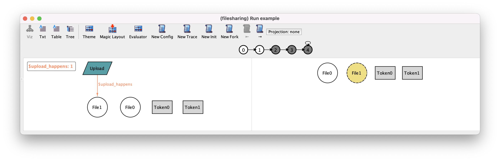

An idiom for event depiction#
When validating the file sharing example model in the main chapter Behavioral modeling, the reader has probably realized that the Alloy visualizer does not show the event (or events) occurring in a given transition. This is because, as customary in Alloy, events were modeled as regular predicates restricting two succeeding states, and Alloy has no way of knowing that those particular predicates should be interpreted as events. In this section, building on the chapter on Visualization customization for structural modeling, we will devise an idiom (a modeling pattern) that allows the depiction of events in the visualizer. As an opportune side effect, it also facilitates the writing of certain classes of formulas.
Let’s consider an instance returned when executing command example, whose transitions are shown below.
{kind=link}
{kind=link}
{kind=link}
{kind=link}
After a short examination, and based upon our knowledge of the specification, we can determine that this trace uploads a file, shares it, deletes it, empties the trash and then stutters forever. However, in the general case, for more complex specifications, the fact that events aren’t displayed makes their interpretation tedious and error-prone.
Depicting parameterless events#
The crux of the idiom presented here is to use derived relations to represent the events happening in a given state. In particular, the value of these relations is calculated for each particular state, so their value may change over the trace. Yet, it may not seem immediately obvious how to use them since derived relations define relations based on existing signatures, while we haven’t got any such signature for events, only predicates. No problem! Let’s introduce a signature (more precisely: an enumeration, since the required atoms are known and we won’t need to add fields) representing event names. Observe how we use the capitalised names of predicates (corresponding to events) as elements of the enumeration, in order to enhance readability.
enum Event {
// event names
Empty, Upload, Delete, Restore, Share, Download, Stutter
}
Also, in the theme customisation menu, change the shape and colour of events, for instance to a blue parallelogram. Then set Hide unconnected nodes to On for Event nodes, as we don’t want to see all event names at all states, but only those corresponding to events occurring in a given state.
Now, let’s introduce a first derived relation. Let us start with the simplest case, the events that take no parameters, empty and stutter.
fun empty_happens : set Event {
{ e : Empty | empty }
}
fun stutter_happens : set Event {
{ e : Stutter | stutter }
}
This definition may seem strange at first but this is indeed what we want. Sets by comprehension retrieve a set of atoms for which a certain formulas is true; if this formula is temporal, a different set may be returned in each state. So the empty_happens derived relation yields, in every state, a subset of Event that will be populated (exactly by singleton Empty) if the empty predicate is true, and empty otherwise.
Let us observe the effect of adding this derived relation to the visualisation. First, open the theme customisation menu and set both Hide unconnected nodes and Show as labels to Off for
the subsets $empty_happens and $stutter_happens. This will override the hiding of Event nodes that belong to those subset.

Then head to the last states of the trace (where the empty and stutter events occur). You will now be able to observe the event happening, as shown below.
{kind=link}
Depicting events with parameters#
Now, let’s consider events that have parameters, such as the upload event that takes a file as a parameter. In this case, the derived relation shouldn’t just yield the Upload name as we wouldn’t be able to tell for which file (or files) it is satisfied. We rather return the set of all pairs whose first coordinate is the Upload name and whose second coordinate is a file on which the upload event happens. And likewise for the other
events that take a single parameter.
fun upload_happens : Event -> File {
{ e : Upload, f : File | upload[f] }
}
fun delete_happens : Event -> File {
{ e : Delete, f : File | delete[f] }
}
fun restore_happens : Event -> File {
{ e : Restore, f : File | restore[f] }
}
fun download_happens : Event -> Token {
{ e : Share, t : Token | download[t] }
}
Now the first state of the trace is as follows. Since Event nodes
related by upload_happens are no longer unconnected, they will show
up in the visualization without needing to change the theme as was the case for
the events without parameters.
{kind=link}
Finally, we can proceed with the last event, share. Since this event takes two parameters, the derived relation representing it will now be ternary,
the first coordinate having the Share name and the other two the file and the token on which the share event occurs.
fun share_happens : Event -> File -> Token {
{ e : Share, f : File, t : Token | share[f, t] }
}
The result is as follows.
{kind=link}
As you start visualising a trace, you may realise that the depiction of events without further theme customization is deficient when an event takes two parameters or more. A possible alternative visualization is to show event parameters as labels of the event name rather than edges. However, we need to somehow identify which events occur in each state without relying on those edges and the Hide unconnected nodes option. To do so, we can introduce a further derived relation that just returns the set of names of events occurring in a state.
fun events : set Event {
empty_happens + stutter_happens +
(upload_happens + delete_happens + restore_happens).File +
download_happens.Token + share_happens.Token.File
}
Note that, for instance, expression upload_happens.File projects away any parameter of upload events and keeps only the event name.
Then the following theme can be configured:
Uncheck Hide unconnected nodes for the
$eventsset and set Show as labels to Off.In the relations part, set all derived relations for events to Show as attribute and change the displayed name for the derived relations to
args(shown below for$upload_happens).

This way, we get the following depiction. Notice how the arguments of events can be seen clearly (namely File1 for the upload event in state 0, and File1 and Token1 for the share event in state 1).
{kind=link}
On a last note, in our file sharing example all events are interleaved, meaning that exactly one event occurs in each state. This is not necessarily the case, and models that allow true concurrency may allow many events to occur simultaneously, which hinders even further the identification of the occurring events without a proper visualization. Luckily, the idiom we just presented will work exactly the same if multiple events occur in a state: the derived relations will just return additional tuples, which will be depicted as well.
Event idiom beyond visualization#
This is it for the idiom enabling a more informative depiction of traces!
At the beginning of this section, however, we also said that the idiom is useful to specify certain classes of formulas in a nice way. Let’s explore this aspect. First, the idiom allows to greatly simplify the transitions_or_stutter fact.
fact transitions_or_stutter {
// The system either evolves according to the defined actions or stutters
always some events
}
You may also check whether our system effectively encode interleaved events, by testing if it is possible to witness the occurrence of two events in the same state, which happens to be the case.
check at_most_one_event {
always lone events
} for 3
However, if, for example, remove the guard from event upload this command yields the following counter-example, where an occurrence of an upload of a file that is already uploaded is indistinguishable from stuttering.
{kind=link}
Perhaps more interesting, notice that predicates and functions belong to different namespaces in Alloy, and they can always be disambiguated based on the syntactic context. For this reason, it is possible to give to the functions defined above the same name as the respective predicates!
fun empty : set Event {
{ e : Empty | empty }
}
fun stutter : set Event {
{ e : Stutter | stutter }
}
fun upload : Event -> File {
{ e : Upload, f : File | upload[f] }
}
fun delete : Event -> File {
{ e : Delete, f : File | delete[f] }
}
fun restore : Event -> File {
{ e : Restore, f : File | restore[f] }
}
fun download : Event -> Token {
{ e : Share, t : Token | download[t] }
}
fun share : Event -> File -> Token {
{ e : Share, f : File, t : Token | share[f, t] }
}
Now suppose you want to see the example of a trace in which two share events happen in a row (for arbitrary arguments). Until now, you would have had to write this in a rather contrived way, for instance as follows.
run two_shares_in_a_row {
eventually (
(some f : File, t : Token | share[f, t]) and
after (some f : File, t : Token | share[f, t])
)
} for 3
Yet, the derived relations defined above are also useful to say that an event happens (for some parameters). Indeed, it is enough to say that the corresponding derived relation is non-empty!
run two_shares_in_a_row {
eventually (some share and after some share)
} for 3
Thus, giving the same name to a predicate (representing an event) and to the respective derived relations makes it easy to say that an event e happens: you just have to write some e!
As a final remark, notice that this idiom doesn’t entail any performance penalty:
If derived relations are only used for the depiction of events, they are only computed when visualising instances.
If they are also used in formulas, to say for instance that an event happens, they actually use less variables than the version where a predicate is passed arguments quantified existentially.
Thus, the only price to pay is a small but systematic inflation, albeit admittedly tedious, of our models. In the future, an extension to Alloy may be proposed to automate this task.